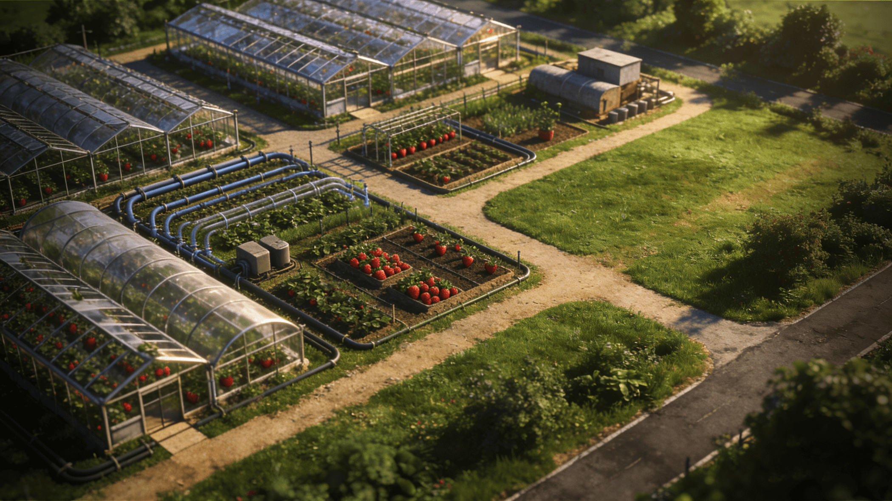
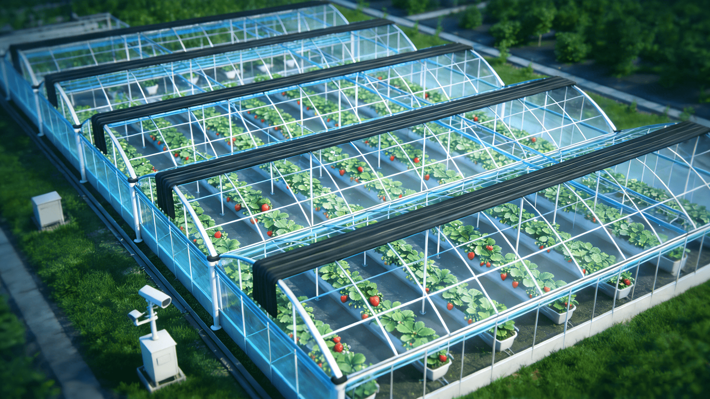

数据专题 · 06
智慧园区一张图
返回门户实时
园区大棚
42栋
木兰金秋
智能化覆盖
96%
▲ 4.0%
种植品种
6个
草莓为主
今日客流
1,286人
▲ 周末高峰
采摘收入
8.6万
▲ 22%
园区简介
省级示范木兰金秋基地是黄陂区草莓数字农事核心示范园，占地 3000 亩，建有大棚 42 栋，集成物联网监测、水肥一体化、AI 病虫害识别与全程溯源，实现「种植—管护—采摘—溯源」全链路数字化运营，并开放农旅采摘体验。
大棚数量分布
合计 42 栋标准种植棚36
育苗棚3
水肥首部2
分拣冷链1
智能设备 132 台视频监控 24 路安防 8 区
智能化运营
物联设备在线率98% · 129/132
智能化覆盖96%
AI 病虫害识别准确率94%
自动化灌溉覆盖86% · 36/42
园区影像 · 视频 / 照片
LIVE · 24 路
LIVE · 园区全景 · 制高点球机
--:--:--
木兰金秋基地 · 主入口
CH01 · 4K
主入口全景

溯源走廊 种植大棚
种植大棚 棚内实景
棚内实景视频路数 24
在线 23
存储 30 天
照片档案 1.2万
种植分布
3000 亩 · 6 品种红颜1350 亩 · 45%
章姬600 亩 · 20%
淡雪360 亩 · 12%
白草莓300 亩 · 10%
越心240 亩 · 8%
其他150 亩 · 5%
主力品种 红颜，占种植面积近半 · 全部接入溯源
客流预警
采摘园承载286/300
接近上限，建议启动分流预案